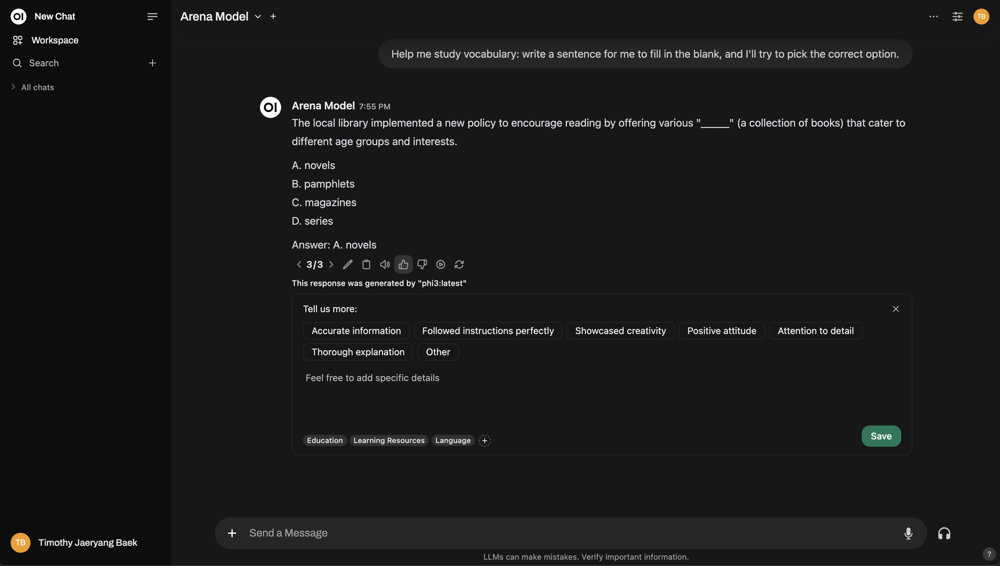

📠Evaluation
Why Should I Evaluate Models?​
Meet Alex, a machine learning engineer at a mid-sized company. Alex knows there are numerous AI models out there—GPTs, LLaMA, and many more—but which one works best for the job at hand? They all sound impressive on paper, but Alex can’t just rely on public leaderboards. These models perform differently depending on the context, and some models may have been trained on the evaluation dataset (sneaky!). Plus, the way these models write can sometimes feel … off.
That's where Open WebUI comes in. It gives Alex and their team an easy way to evaluate models based on their actual needs. No convoluted math. No heavy lifting. Just thumbs up or thumbs down while interacting with the models.
TL;DR​
- Why evaluations matter: Too many models, but not all fit your specific needs. General public leaderboards can't always be trusted.
- How to solve it: Open WebUI offers a built-in evaluation system. Use a thumbs up/down to rate model responses.
- What happens behind the scenes: Ratings adjust your personalized leaderboard, and snapshots from rated chats will be used for future model fine-tuning!
- Evaluation options:
- Arena Model: Randomly selects models for you to compare.
- Normal Interaction: Just chat like usual and rate the responses.
Why Is Public Evaluation Not Enough?​
- Public leaderboards aren’t tailored to your specific use case.
- Some models are trained on evaluation datasets, affecting the fairness of the results.
- A model may perform well overall, but its communication style or responses just don’t fit the “vibe†you want.
The Solution: Personalized Evaluation with Open WebUI​
Open WebUI has a built-in evaluation feature that lets you and your team discover the model best suited for your particular needs—all while interacting with the models.
How does it work? Simple!
- During chats, leave a thumbs up if you like a response, or a thumbs down if you don’t. If the message has a sibling message (like a regenerated response or part of a side-by-side model comparison), you’re contributing to your personal leaderboard.
- Leaderboards are easily accessible in the Admin section, helping you track which models are performing best according to your team.
One cool feature? Whenever you rate a response, the system captures a snapshot of that conversation, which will later be used to refine models or even power future model training. (Do note, this is still being developed!)
Two Ways to Evaluate an AI Model​
Open WebUI provides two straightforward approaches for evaluating AI models.
1. Arena Model​
The Arena Model randomly selects from a pool of available models, making sure the evaluation is fair and unbiased. This helps in removing a potential flaw in manual comparison: ecological validity – ensuring you don’t knowingly or unknowingly favor one model.
How to use it:
- Select a model from the Arena Model selector.
- Use it like you normally would, but now you’re in “arena mode.”
For your feedback to affect the leaderboard, you need what’s called a sibling message. What's a sibling message? A sibling message is just any alternative response generated by the same query (think of message regenerations or having multiple models generating responses side-by-side). This way, you’re comparing responses head-to-head.
- Scoring tip: When you thumbs up one response, the other will automatically get a thumbs down. So, be mindful and only upvote the message you believe is genuinely the best!
- Once you rate the responses, you can check out the leaderboard to see how models are stacking up.
Here’s a sneak peek at how the Arena Model interface works:

Need more depth? You can even replicate a Chatbot Arena-style setup!
2. Normal Interaction​
No need to switch to “arena mode†if you don't want to. You can use Open WebUI normally and rate the AI model responses as you would in everyday operations. Just thumbs up/down the model responses, whenever you feel like it. However, if you want your feedback to be used for ranking on the leaderboard, you'll need to swap out the model and interact with a different one. This ensures there's a sibling response to compare it with – only comparisons between two different models will influence rankings.
For instance, this is how you can rate during a normal interaction:
And here's an example of setting up a multi-model comparison, similar to an arena:

Leaderboard​
After rating, check out the Leaderboard under the Admin Panel. This is where you’ll visually see how models are performing, ranked using an Elo rating system (think chess rankings!) You’ll get a real view of which models are truly standing out during the evaluations.
This is a sample leaderboard layout:
Topic-Based Reranking​
When you rate chats, you can tag them by topic for more granular insights. This is especially useful if you’re working in different domains like customer service, creative writing, technical support, etc.
Automatic Tagging​
Open WebUI tries to automatically tag chats based on the conversation topic. However, depending on the model you're using, the automatic tagging feature might sometimes fail or misinterpret the conversation. When this happens, it’s best practice to manually tag your chats to ensure the feedback is accurate.
- How to manually tag: When you rate a response, you'll have the option to add your own tags based on the conversation's context.
Don't skip this! Tagging is super powerful because it allows you to re-rank models based on specific topics. For instance, you might want to see which model performs best for answering technical support questions versus general customer inquiries.
Here’s an example of how re-ranking looks:
Side Note: Chat Snapshots for Model Fine-Tuning​
Whenever you rate a model’s response, Open WebUI captures a snapshot of that chat. These snapshots can eventually be used to fine-tune your own models—so your evaluations feed into the continuous improvement of the AI.
(Stay tuned for more updates on this feature, it's actively being developed!)
Summary​
In a nutshell, Open WebUI’s evaluation system has two clear goals:
- Help you easily compare models.
- Ultimately, find the model that meshes best with your individual needs.
At its heart, the system is all about making AI model evaluation simple, transparent, and customizable for every user. Whether it's through the Arena Model or Normal Chat Interaction, you’re in full control of determining which AI model works best for your specific use case!
As always, all of your data stays securely on your instance, and nothing is shared unless you specifically opt-in for community sharing. Your privacy and data autonomy are always prioritized.